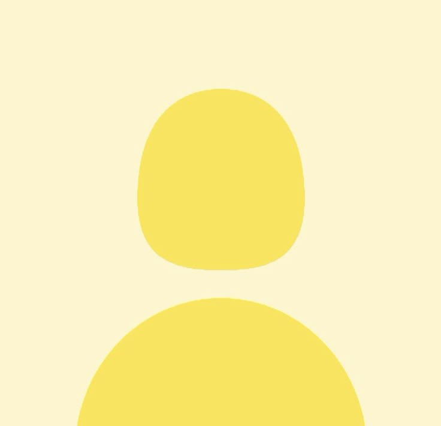

Pencemaran Tanah
Sampah yang menumpuk di tanah dapat merusak kualitas tanah. Beberapa bahan seperti plastik membutuhkan waktu ratusan tahun untuk terurai. Hal ini dapat membuat tanah menjadi tidak subur dan sulit digunakan untuk tanaman. Akibatnya, keseimbangan lingkungan dapat terganggu.
326 rb
1.1 jt x ditonton
26 Agustus 2026
Pencemaran Air
Sampah yang dibuang ke sungai atau laut dapat mencemari sumber air. Banyak hewan laut yang terluka atau mati karena menelan plastik. Selain itu, sampah di air dapat mengganggu ekosistem perairan. Air yang tercemar juga dapat membahayakan kesehatan manusia.
326 rb
1.1 jt x ditonton
26 Agustus 2026
Gangguan Ekosistem
Sampah yang tidak dikelola dengan baik dapat merusak keseimbangan ekosistem. Hewan dapat kehilangan habitatnya akibat lingkungan yang tercemar. Selain itu, rantai makanan dalam ekosistem juga dapat terganggu. Dalam jangka panjang, kerusakan ekosistem dapat mempengaruhi kehidupan manusia.
326 rb
1.1 jt x ditonton
26 Agustus 2026
Forum Diskusi
Dimas Pratama
2 hari lalu
Menurut saya, memilah sampah dari rumah merupakan langkah sederhana yang bisa dilakukan setiap hari untuk membantu mengurangi jumlah sampah yang berakhir di lingkungan.
Citra Ayuning
1 hari lalu
Setuju banget, kebiasaan kecil seperti memisahkan sampah organik dan anorganik akan terasa lebih mudah kalau seluruh anggota keluarga ikut melakukannya.
Bagas Ramadhan
1 hari lalu
Saya juga mulai menerapkannya di tempat usaha kecil saya karena ternyata pemisahan sampah membuat proses pengelolaan sampah menjadi lebih teratur.

Nadia Putri
Pelajar · 20 jam lalu
Menurut saya, lingkungan sekolah juga bisa menjadi tempat yang bagus untuk membiasakan kegiatan memilah sampah sejak usia muda.
Rani Maharani
5 hari lalu
Setelah melihat materi ini, saya baru menyadari bahwa sampah organik seperti sisa makanan ternyata masih dapat dimanfaatkan kembali menjadi sesuatu yang berguna.
Yoga Saputra
4 hari lalu
Benar, sisa makanan dan daun kering dapat dimanfaatkan untuk membuat kompos yang nantinya berguna bagi tanaman di sekitar rumah.
Sinta Lestari
3 hari lalu
Saya tertarik mencoba membuat kompos sendiri karena ternyata caranya tidak sesulit yang saya bayangkan setelah melihat penjelasan pada video tersebut.
Reza Aditya
1 minggu lalu
Menurut saya, masalah sampah bukan hanya disebabkan oleh banyaknya sampah yang dihasilkan, tetapi juga kebiasaan masyarakat dalam membuang dan mengelolanya.
Maya Kartika
1 minggu lalu
Saya masih sering bingung membedakan sampah yang termasuk B3 dengan sampah biasa, terutama ketika menemukan barang bekas yang belum pernah saya gunakan sebelumnya.
Ardi Wijaya
6 hari lalu
Sampah B3 biasanya perlu diperhatikan karena mengandung bahan yang dapat membahayakan manusia maupun lingkungan jika tidak dikelola dengan benar.
Lala Permata
6 hari Lalu
Saya juga awalnya bingung, terutama dengan baterai bekas dan beberapa jenis lampu yang ternyata tidak boleh dibuang sembarangan.
Fajar Nugraha
5 hari Lalu
Setelah mengetahui contohnya, saya jadi lebih mudah mengenali beberapa benda yang sebaiknya dipisahkan dari sampah rumah tangga lainnya.
Maya Kartika
5 hari Lalu
Terima kasih penjelasannya, sekarang saya jadi lebih paham bahwa sampah B3 membutuhkan penanganan yang berbeda dibandingkan sampah biasa.
Kevin Mahendra
2 minggu lalu
Menurut saya, menggunakan kembali barang yang masih layak merupakan kebiasaan sederhana yang dapat mengurangi keinginan untuk terus membeli barang baru.
Putu Sari
1 minggu lalu
Saya setuju, beberapa wadah bekas di rumah ternyata masih bisa digunakan untuk menyimpan barang sehingga tidak langsung menjadi sampah.
Andika Surya
3 minggu lalu
Menurut saya, edukasi tentang pengelolaan sampah sebaiknya lebih sering dilakukan di sekolah agar siswa terbiasa menjaga lingkungan melalui kebiasaan kecil sehari-hari.